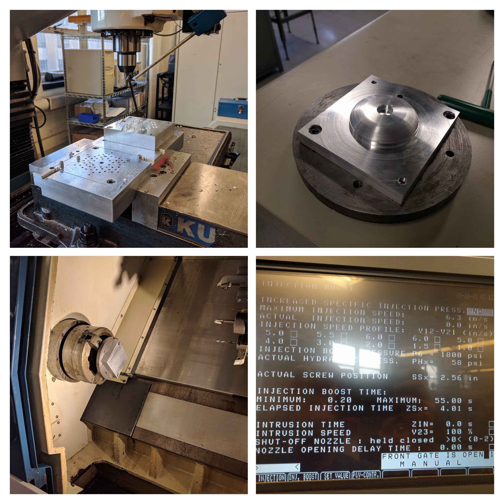
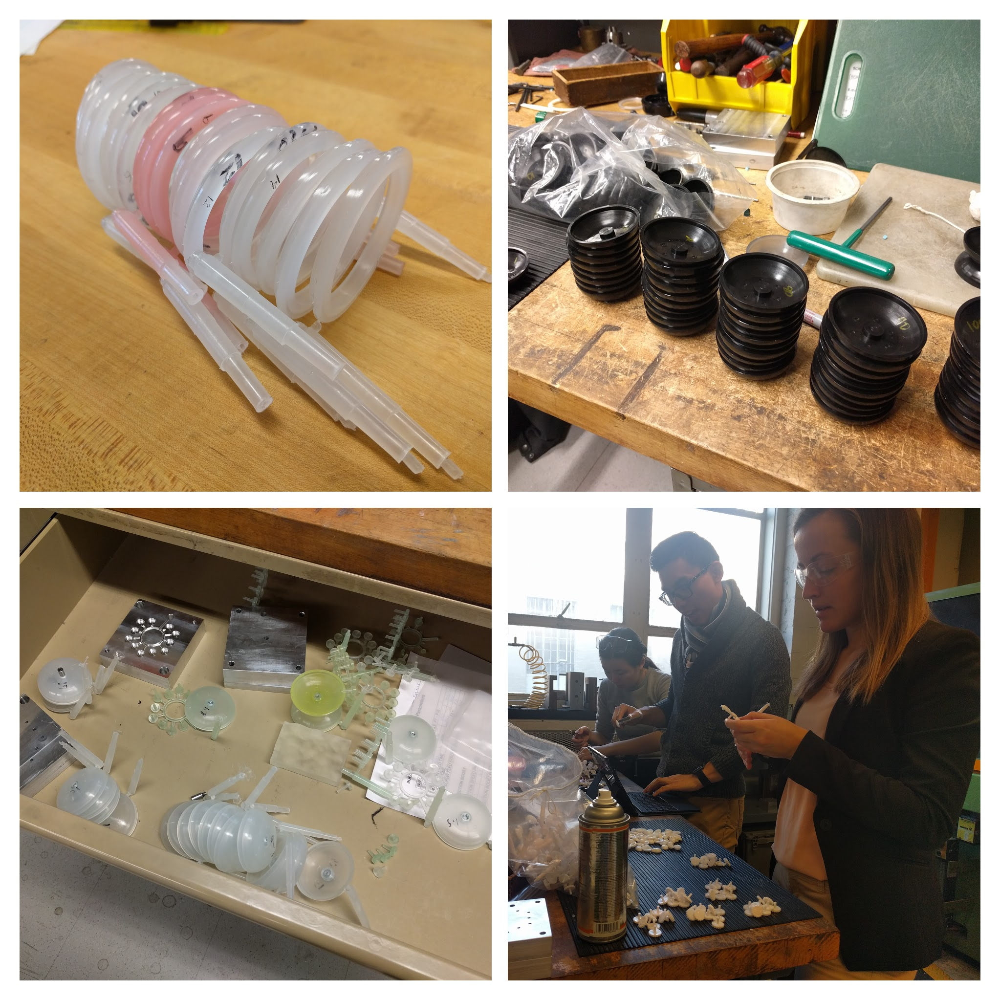
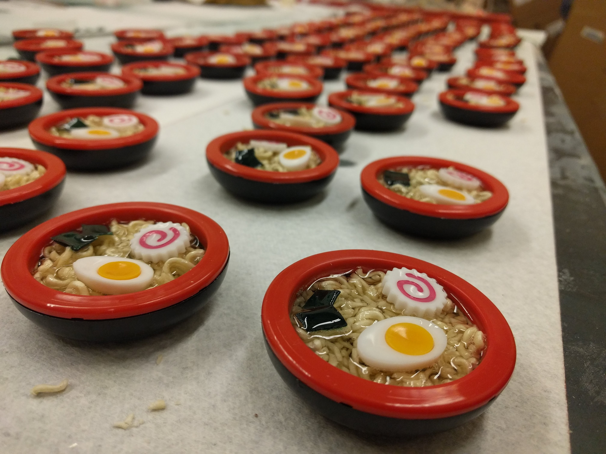

Ramen Yo-Yo's
Creation of 50 identical Ramen Yo-Yo's through CNC machining, injection molding and thermoforming. Responsible for yo-yo body and thermoformed molds as well as serving as team leader.
Resposibilities
- Injection Molding Molds
- Thermoforming Mold
- Team Leadership
In MIT's 2.008: Design and Manufacturing II, my team made a ramen-themed yoyo. As part of the team, I was really excited about the project which eventually allowed me to gain a leadership role in the team. Because I had previous machining experience, I helped lead the team towards a finished product. I devoted a lot of time to this class and helped out my teammates make their molds as well as guide them throughout the design. I scheduled weekly meetings to discuss our ideas and check up on everyone's work and reviewed their drawings. At the end of the semester we had a very successful yoyo which won 1st place in overall ratings.
Exploded view of the final yo-yo design. It is comprised of a red snap ring, egg with yolk, fish cake, seaweed, body, spacers and center stud.

Pouring real ramen noodles into a cup to test the epoxy that we planned one using for the yo-yo.

The yo-yo halves waiting to be cured after the epoxy was poured.
50 identical ramen yo-yo's!
“Do not pray for an easy life, pray for the strength to endure a difficult one.”
— Bruce Lee